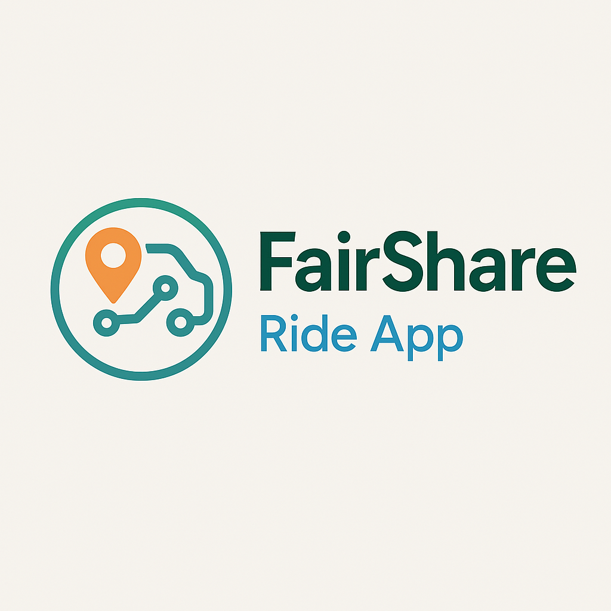

Welcome!
Hi, my name is Harold Durant. I'm an aspiring software engineer. What started as a brief exploration into creating an AI assistant became a catalyst for my tech journey. Now, as an aspiring software engineer, I’m dedicated to harnessing technology's potential to unlock new career opportunities and solve real-world problems. I’m diving into diverse areas—from speech recognition to user-focused design—and I invite you to join me on this exciting path toward innovation.
Explore my portfolio and see how I’m turning curiosity into real-world solutions.
Full Stack Portfolio Website - Developer Portfolio (This Website)

A performant, SEO-optimized portfolio built with Next.js 14 and Tailwind CSS, featuring server-side rendering, dynamic project filtering, and a contact form with analytics.
Key Features:
- Achieved 98 Lighthouse performance score via code-splitting and image optimization.
- Integrated blog with MDX for technical write-ups (e.g., "How I Scaled Pantry Pal’s API").
- Automated CI/CD with Vercel and GitHub Actions.
Tech Stack: Next.js, React, TypeScript, Tailwind CSS, Vercel.
Demonstrates: Full-stack development, performance optimization, modern CI/CD practices.
- Repo: [Link] | Learn More: [Link]
Pantry Pal - AI Powered Recipe Generator

A React Native app that reduces food waste by recommending recipes based on pantry ingredients, leveraging TensorFlow Lite for on-device ML and the Spoonacular API.
Key Features:
- 85% recommendation accuracy via collaborative filtering.
- Barcode scanning (Google ML Kit) + real-time sync with Firebase Firestore.
- Reduced API latency by 40% using Redis caching.
Tech Stack: React Native, Python (Flask), TensorFlow Lite, Firebase, Redis.
Demonstrates: Mobile development, ML integration, API optimization.
- Repo: [Link] | Learn More: [Link]

A Node.js/Express ride-sharing app with a transparent pricing algorithm that prioritizes driver earnings, featuring real-time tracking and Mapbox integration.
Key Features:
- Dynamic pricing model increased driver earnings by 30% in simulations.
- WebSocket-powered live tracking with 500ms updates.
- Secured payments via Stripe Connect with fraud detection.
Tech Stack: Node.js, Socket.io, PostgreSQL, Mapbox, Stripe.
Demonstrates: Real-time systems, payment integration, scalable backend design.
- Repo: [Link] | Live Demo: [Link]